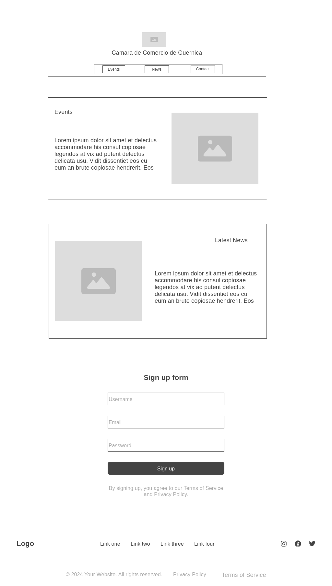
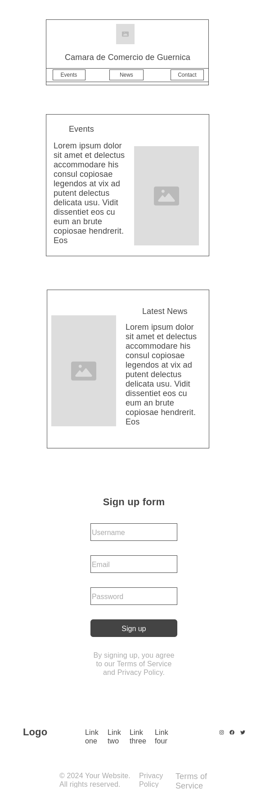

Guernica Chamber of Commerce Site Plan
Site Name
Guernica Chamber of Commerce - This name was chosen because it reflects our location in Partido Presidente Perón and emphasizes the Chamber's focus on supporting local businesses and promoting tourism, commerce, and community activities in Guernica.
Site Purpose
The purpose of the Guernica Chamber of Commerce website is:
- To provide updated information on events, fairs, and cultural activities, such as festivals, artisan fairs, and typical food events.
- To promote local commerce through a platform that connects businesses with potential customers, supporting entrepreneurs and businesses in Guernica.
Scenarios
- What are the upcoming outdoor events, such as festivals and artisan fairs, in Guernica?
- Where can I find more information about pedestrian street activities on weekends?
- How can I participate in promoting local products during Chamber events?
Color Schema
The color scheme has been chosen to reflect the vibrant and natural environment of Guernica. It incorporates shades of green, blue, rose, brown, and black, evoking the feeling of outdoor festivals, local crafts, and community events.
Primary Colors
- Green (Nyanza): #d8ffdd
- Blue (Cerulean): #0075a2
- Rose (Misty Rose): #f0d2d1
- Brown (Umber): #594236
- Black (Raisin Black): #201e1f
Color Applications
- Headers and Titles: The
--cerulean color (blue) will be used for headers to give a strong and professional look.
- Body Text: The
--raisin-black color (black) will be used for the body text, ensuring readability.
- Background and Buttons: The
--nyanza color (green) will be used for backgrounds and primary action buttons to convey freshness.
- Accent Details: The
--misty-rose color (rose) will be used for accent details such as borders or secondary buttons.
- Gradients: Gradients will be used for section backgrounds or large visual areas to create a smooth, cohesive look.
Typography
The following fonts will be used:
- Roboto Condensed for titles and headings, giving a modern and professional touch.
- Inter for body text, ensuring readability and smooth reading flow.
Wireframe
These wireframes show the proposed layout for the Guernica Chamber of Commerce website in both desktop and mobile versions.
Desktop Version

Mobile Version
